Emergency Board-Up and Opening Protection
Crain Bros Inc provides emergency board-up and opening protection for fire-damaged buildings. We secure exposed windows and doors and protect the property while permanent repairs are planned.
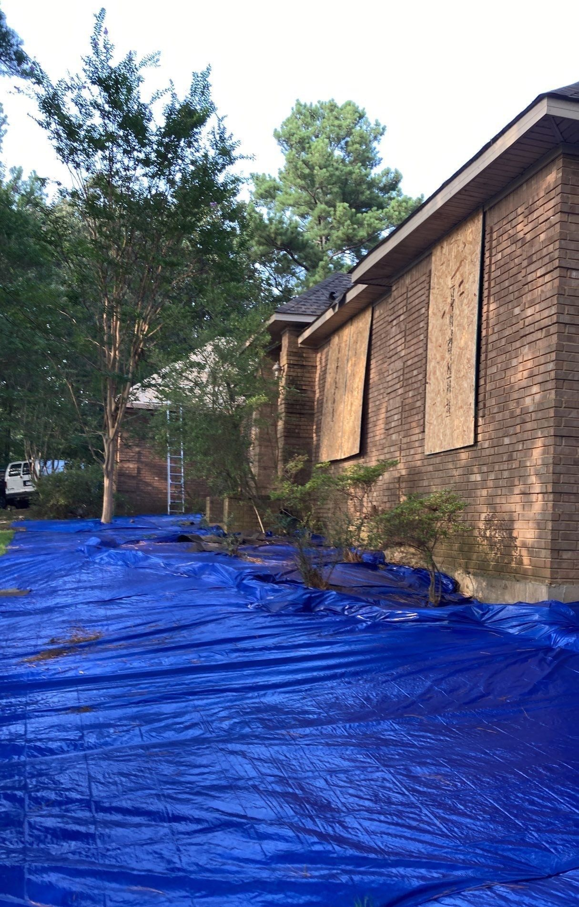
Crain Bros Inc provides fire damage restoration in homes and businesses in Jonesboro, Paragould, Brookland, Bono, Trumann, Harrisburg, Walnut Ridge, Lake City, Bay, Caraway, Monette, Newport, Blytheville, Gosnell, and surrounding Northeast Arkansas communities.
Family owned and operated since 1984, Crain Bros Inc provides emergency property protection, smoke and soot cleanup, HVAC cleaning, water damage restoration, structural and roofing repairs, contents care, and reconstruction. Fire can also affect materials behind walls, above ceilings, and in rooms the flames never reached. We restore the affected property, not just the damage visible on the first walkthrough.
Crain Bros Inc restores fire-damaged buildings beyond the areas where flames were visible. Smoke, heat, soot, and firefighting water can affect concealed materials and connected building systems. The services below explain what we repair or clean first; each photo sits with the work it illustrates.
Crain Bros Inc provides emergency board-up and opening protection for fire-damaged buildings. We secure exposed windows and doors and protect the property while permanent repairs are planned.

Crain Bros Inc installs temporary roof protection over fire-damaged openings to limit further weather exposure. That protection stays in place while the roof and structure are evaluated for permanent repairs.
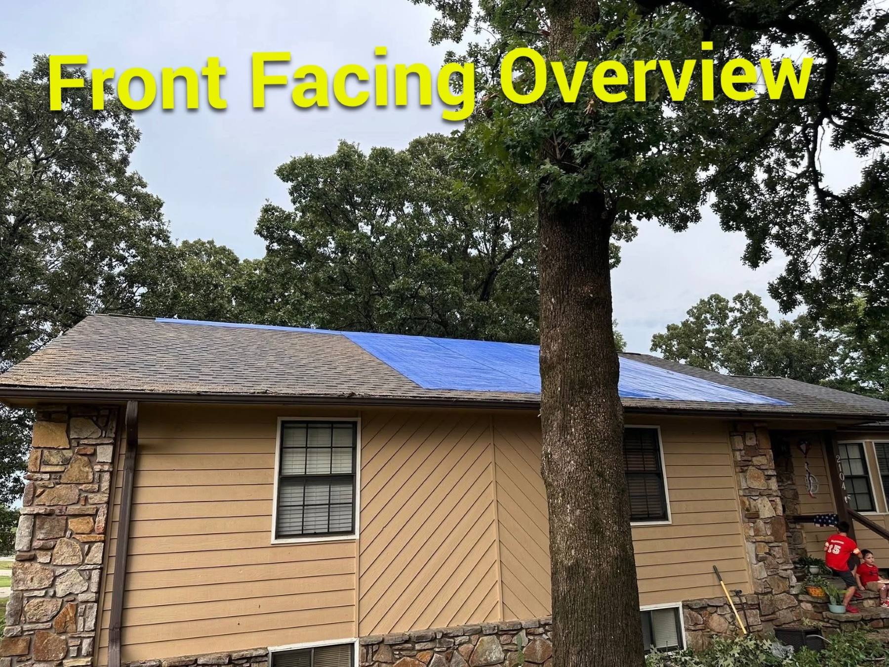
Crain Bros Inc performs fire-damaged roofing repairs, including the covering, sheathing, flashing, and connected roof assemblies where needed. We determine the repair scope from the roof structure and adjoining materials, not only the visible opening.
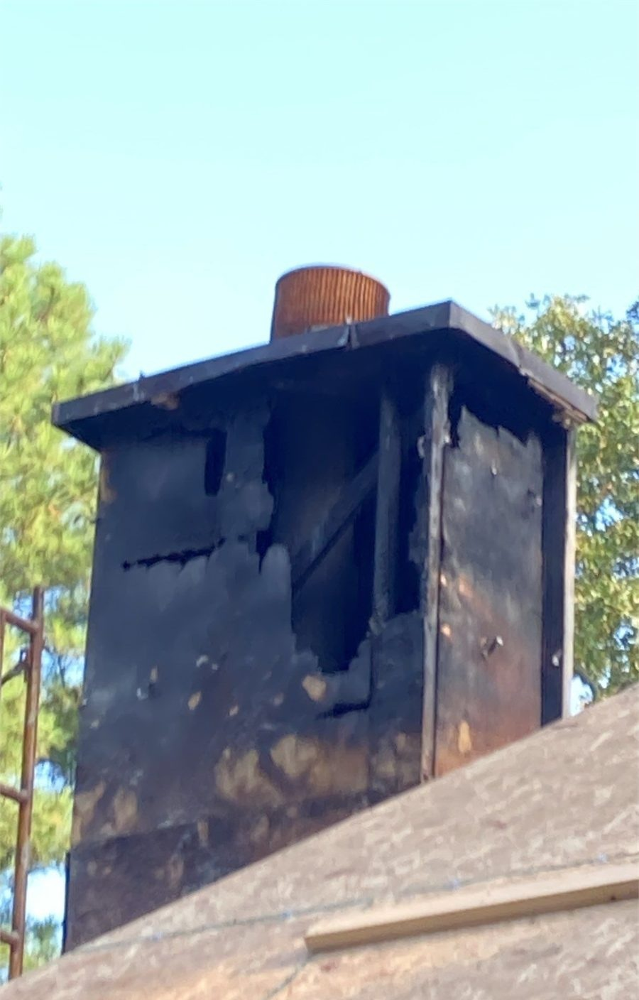
Crain Bros Inc provides structural framing restoration for charred rafters, ridge members, and connected supports. We examine exposed and concealed connections to decide which members can remain and which must be rebuilt.
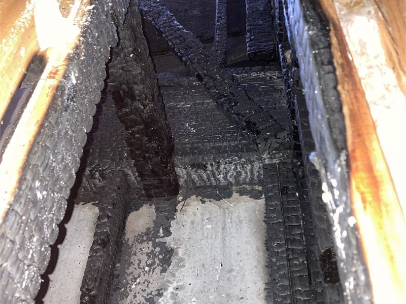
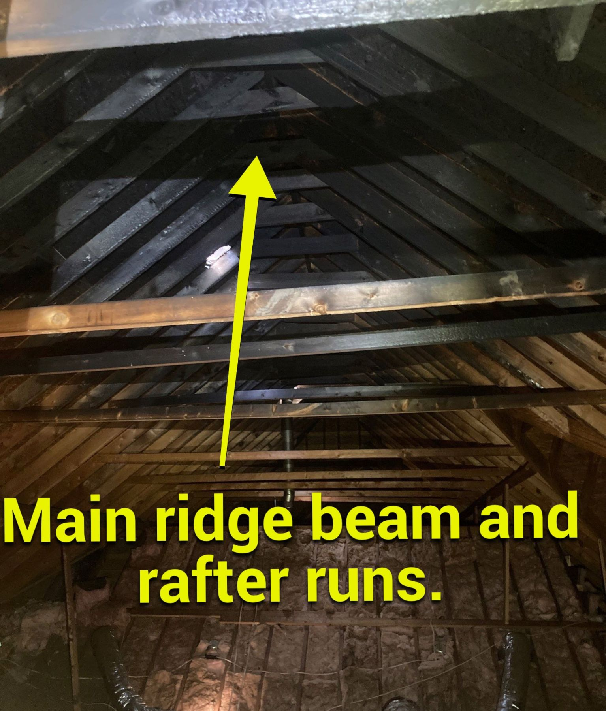
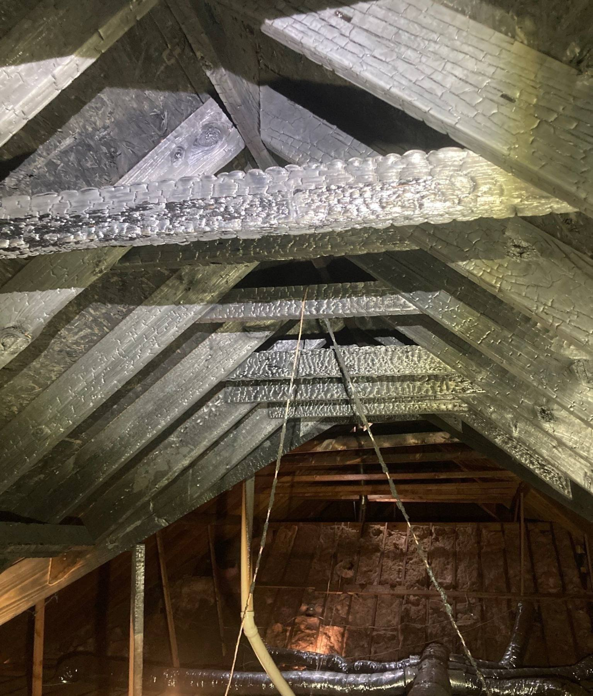
Crain Bros Inc performs smoke damage restoration in rooms, cavities, and connected assemblies. We clean materials that can be restored and remove or replace those that cannot. The wall-to-ceiling photograph shows why smoke work may extend beyond a visibly stained surface.
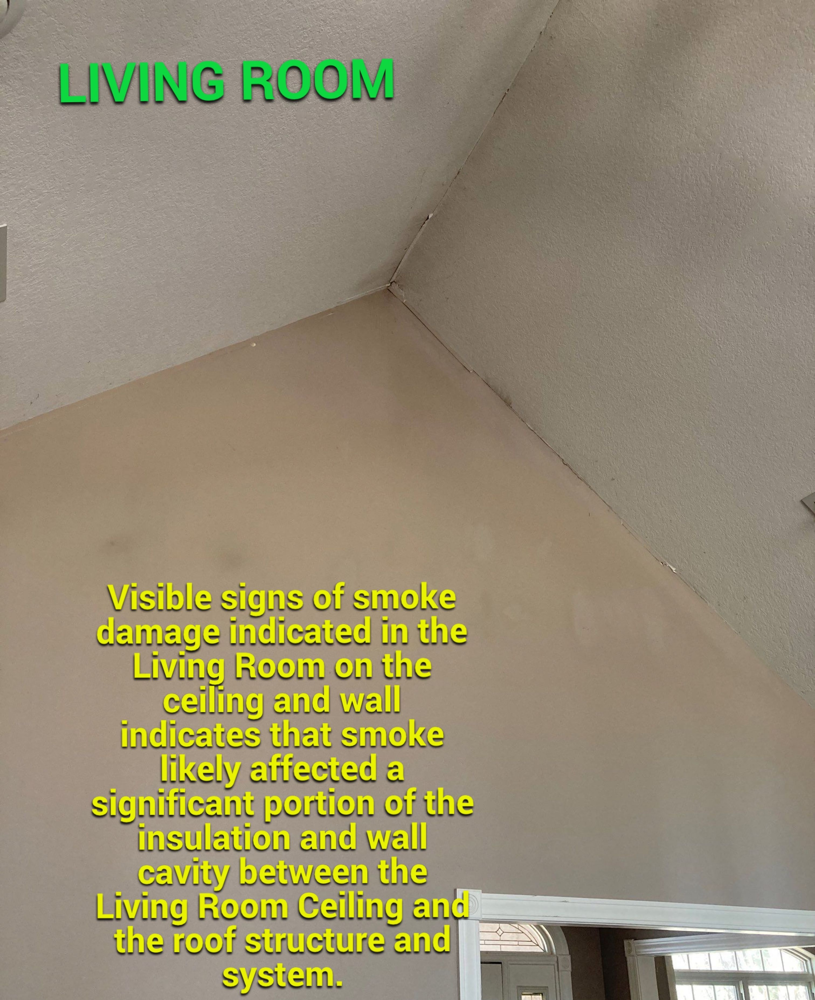
Crain Bros Inc provides HVAC cleaning and restoration for fire- and smoke-affected equipment, ductwork, registers, and connected air pathways. We clean, repair, or replace components according to their condition. The photograph shows one installation with nearby attic materials; the service is not limited to attics.
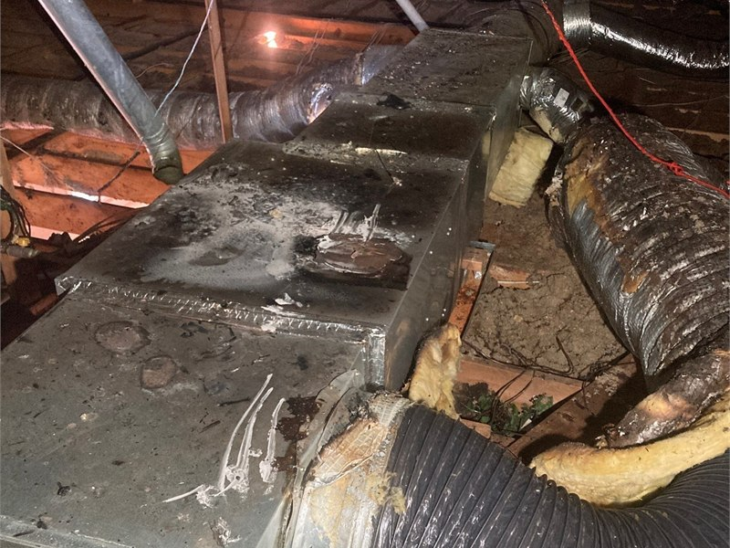
Crain Bros Inc rebuilds damaged chimney enclosures and roof assemblies through general contracting and reconstruction. The photographs show stages of that work after damaged materials were removed and the remaining structure reviewed.
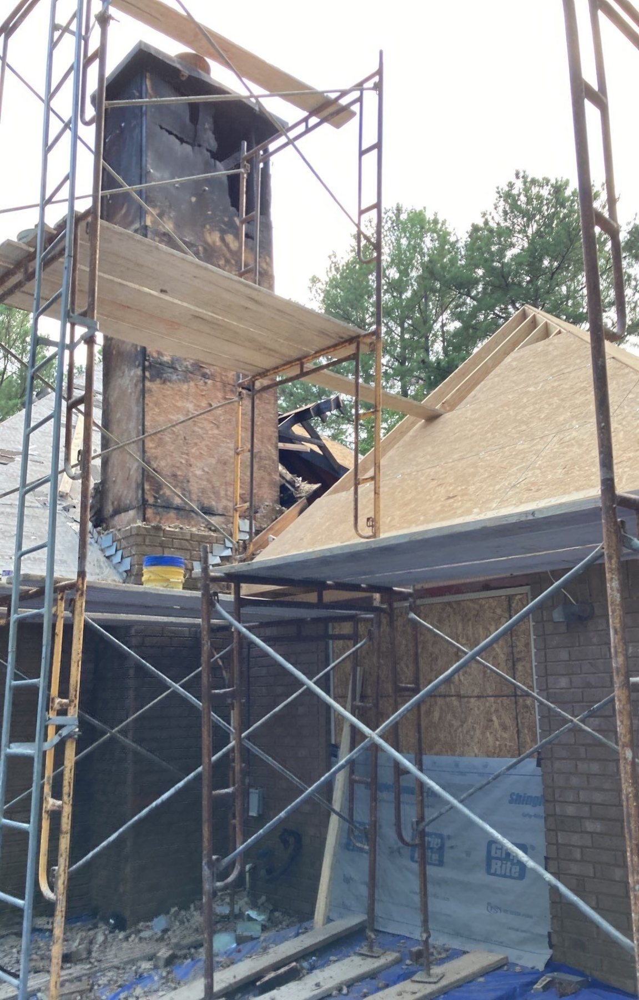
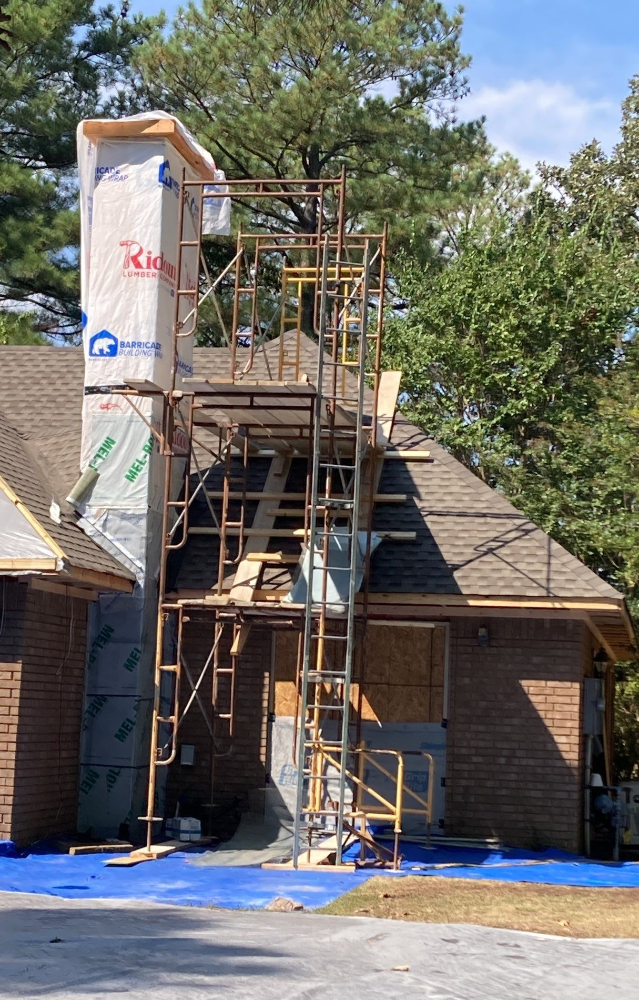
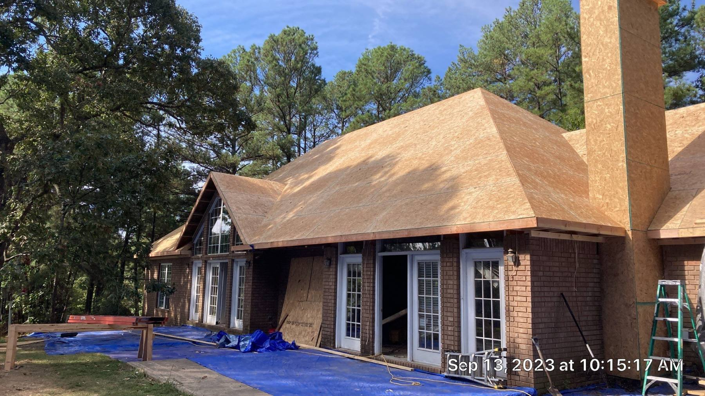
Crain Bros Inc restores damaged exterior walls and openings through property and building restoration. The paired photographs show the same gable wall and window area before and after the exterior work; they do not establish every repair made.
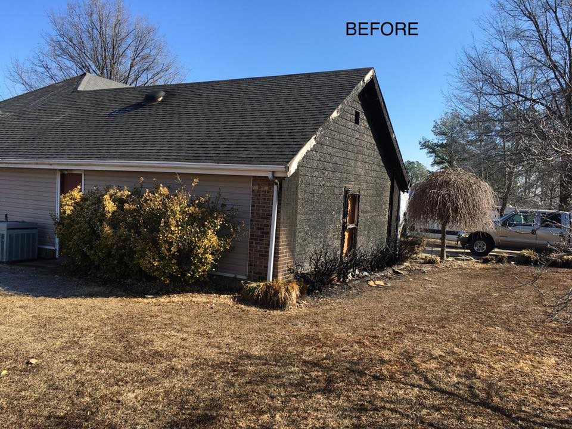
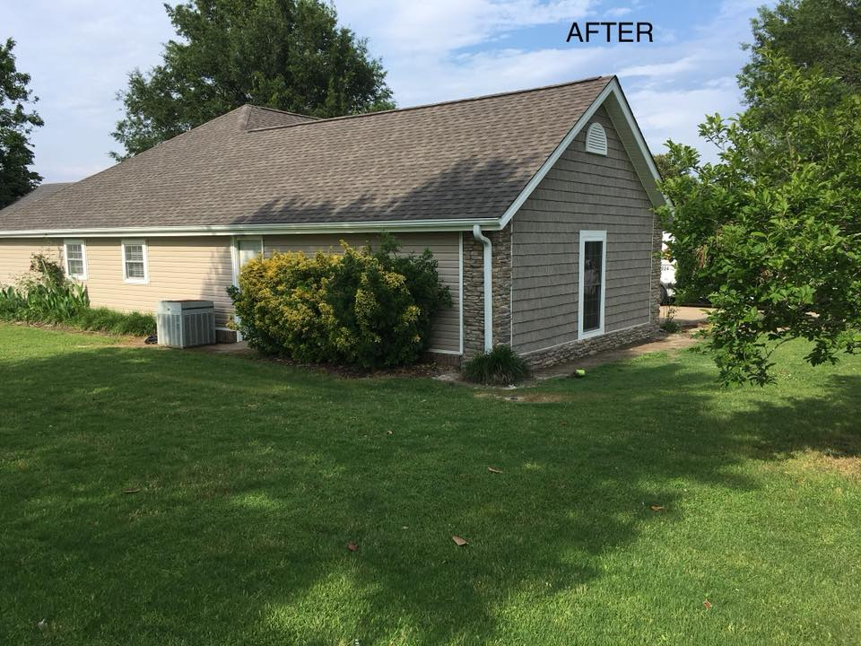
Crain Bros Inc provides soot and fire residue cleaning for retained walls, ceilings, framing, and other affected materials. The cleaning method depends on the material and residue; materials that cannot be cleaned are included in the removal and replacement scope.
Crain Bros Inc provides smoke odor removal by cleaning or removing affected materials and addressing the air pathways involved. Deodorization follows the work needed to correct the source rather than covering an unresolved odor.
Crain Bros Inc provides water damage restoration when firefighting water reaches walls, floors, insulation, cavities, or contents. We remove water, dry assemblies that can remain, and repair materials that cannot. EPA moisture-control guidance explains why moisture in building assemblies matters during repair.
Crain Bros Inc provides contents inventory, cleaning, deodorization, pack-out, and storage for affected belongings when the property and agreed scope call for those services.
Crain Bros Inc removes fire debris from affected areas and protects adjoining parts of the building during the work. Debris removal is coordinated with restoration but remains separate from cleaning retained materials and selective demolition.
Crain Bros Inc performs selective demolition to expose and remove materials that cannot remain while preserving assemblies that can be restored. Opened areas are reviewed for concealed fire, smoke, and water damage before rebuilding.
Crain Bros Inc removes damaged insulation and installs replacement insulation where fire, soot, smoke, or firefighting water has made the existing material unsuitable to remain. We address the adjoining cavity before closing it.
Crain Bros Inc provides electrical repairs and plumbing repairs for affected systems as the fire restoration scope requires, with applicable trade, permit, and inspection requirements.
Crain Bros Inc rebuilds damaged rooms with drywall, flooring, cabinetry, trim, and painting after the underlying cleaning, drying, and system repairs are complete.
Follow the fire department and local authorities before entering the property. Ready.gov guidance after a home fire covers safety and early recovery. From a safe location, keep photos and records of the condition and emergency work.
Crain Bros Inc can discuss board-up, temporary roof protection, contents care, and the full fire damage restoration scope. A room that looks unaffected may still contain smoke residue or water in connected assemblies; the building work is determined from the property conditions, not a quick look at one room.
Crain Bros Inc provides building inspection and diagnostics as a distinct part of the fire restoration project. We examine the structure, roofing, HVAC, electrical and plumbing systems, insulation, rooms, and connected assemblies. Where surface observations do not establish concealed conditions, selected areas may be opened and documented. These findings determine what needs cleaning, removal, repair, or replacement. See Building Inspection & Diagnostics.
Crain Bros Inc plans restoration work around the hazards actually present, including unstable materials, damaged electrical systems, debris, and areas opened for removal. Work-area controls and access are coordinated with the repair sequence. Follow the fire department and the authority having jurisdiction for entry and occupancy decisions; contractor restoration work is not an occupancy clearance. Ready.gov fire safety and recovery information provides additional property-owner guidance. For worker protection, OSHA disaster-cleanup worker safety guidance discusses hazard assessment, training, and protective equipment during cleanup and recovery.
Crain Bros Inc restores affected interior conditions through soot removal, cleaning retained surfaces and HVAC components where needed, addressing smoke odor, and drying water-affected assemblies. Concealed materials are reviewed before new finishes cover them. EPA guidance on emergencies and indoor air quality provides background on indoor environmental concerns; no smell or photograph alone establishes the condition inside a cavity. The Department of Energy moisture-transport resource explains how water can move through connected building assemblies.
Crain Bros Inc designs the fire damage restoration from the documented condition of the property and the owner’s intended use. The property-wide plan identifies affected rooms, building systems, assemblies, and materials. The project plan turns those findings into a repair scope, sequence of work, trade responsibilities, inspection points, and reconstruction requirements. Emergency protection may proceed before the complete permanent design is finished.
We review applicable fire, building, and existing-building requirements, local amendments, permits, plan review, and inspections with the authority having jurisdiction. Licensed design-professional analysis is coordinated when required by the property or proposed work. The Arkansas State Fire Marshal’s Office administers the state fire-prevention framework and provides Arkansas Fire Prevention Code resources; requirements for a particular address and scope must be confirmed locally. Local requirements are confirmed with the authority for the property. The Jonesboro Inspections Department, Paragould department directory, Brookland city government, and Walnut Ridge inspector information are starting points for those jurisdictions.
Fire restoration is not a single cleaning step. The work changes with the building and the damage found as the project proceeds.
Secure exposed openings, protect damaged roof areas, and document immediate conditions.
Inspect visible and concealed building conditions, including smoke, soot, heat, and firefighting water.
Connect property-wide findings to the project scope, trade work, code review, permits, and required professional input.
Inventory, separate, clean, deodorize, move, or store affected belongings as needed.
Control work areas, remove debris, selectively demolish materials that cannot remain, and clean retained assemblies.
Dry water-affected materials; clean, repair, or replace affected HVAC and other building-system components.
Review cleaning, drying, remaining materials, concealed conditions, and required inspections before rebuilding covers them.
Complete structural, roofing, exterior, mechanical, and interior work, then document completed conditions.
Crain Bros Inc provides emergency protection, fire and smoke cleanup, water mitigation, contents care, repairs, and reconstruction on properties involved in insurance claims. As the contractor, we document damage, property conditions, project scope, work progress, and completed repairs so the property owner has clear information to use on the owner’s own behalf. The property owner handles and files the claim.
The services above may involve more than one trade. These pages explain the individual services used within a coordinated restoration project.
Board-up, temporary closures, and stabilization protect the building while permanent fire repairs are planned.
View Emergency ResponseInspection of visible and concealed fire, heat, smoke, and water damage establishes what the restoration must cover.
View Building Inspection & DiagnosticsBuilding restoration connects cleanup and removal with structural, system, exterior, and interior repairs.
View Property & Building RestorationFirefighting water can wet floors, cavities, insulation, and contents that need removal or drying.
View Water Damage RestorationAffected belongings may need inventory, cleaning, deodorization, pack-out, storage, or recovery.
View Personal Property & Contents CareFire-damaged roof coverings and connected assemblies need protection followed by permanent repair.
View RoofingSmoke and soot can affect equipment, ducts, registers, and air pathways that need cleaning or repair.
View HVACHeat, fire, water, and demolition can require electrical-system repairs and inspections.
View ElectricalPiping and fixtures affected by fire or reconstruction may require repair or replacement.
View PlumbingCharred rafters and other structural members may need repair before the roof or finishes are closed.
View FramingAffected insulation may need removal and replacement after the surrounding cavity is addressed.
View InsulationWalls and ceilings are rebuilt after concealed conditions, residue, and moisture are addressed.
View DrywallDamaged floor finishes and subfloors are restored after water and structural conditions are resolved.
View FlooringFinish work follows cleaning and repair of the underlying surfaces.
View PaintingThe repair plan coordinates trades, permits, inspections, and reconstruction as one project.
View General ContractingHeat, smoke, soot, and firefighting water can affect connected rooms, cavities, materials, and systems. The restoration scope depends on what is actually found.
Yes. Crain Bros Inc performs smoke damage restoration, soot cleaning, odor removal, and material repair or replacement where the documented conditions require them.
Crain Bros Inc provides HVAC cleaning and restoration for affected equipment and ductwork, and repairs or replaces components when cleaning is not appropriate.
We assess the affected materials, remove water, dry assemblies that can remain, and repair or replace materials that cannot.
Yes. Crain Bros Inc performs fire damage repairs and reconstruction, including structural, roofing, exterior, building-system, and interior work as the project requires.
No. Crain Bros Inc documents the damage, conditions, scope, and project work as the contractor. The property owner handles and files the claim.
These sources support the safety, indoor-environment, and code information in the sections above. Confirm local requirements for the property's address and scope.
Property-owner safety and recovery after a home fire.
Read Ready.gov home-fire guidanceIndoor-environment concerns during and after emergencies.
Read EPA indoor-air guidanceMoisture control in walls, roofs, plumbing, and HVAC systems during repair and construction.
Read EPA moisture guidanceHow water and moisture move through building assemblies.
Review DOE moisture transportWorker hazards, hazard assessment, training, and protective equipment.
Read OSHA cleanup safety guidanceState fire-prevention code administration and local-jurisdiction assistance.
Visit Arkansas State Fire MarshalState links to fire, building, and residential code materials.
Review Arkansas code resourcesLocal inspection and code-administration information.
Review Jonesboro InspectionsCity department contacts for local requirements.
Find Paragould departmentsLocal government information for property requirements.
Visit Brookland city governmentCity inspector and department information.
Review Walnut Ridge inspector informationCrain Bros Inc provides fire damage restoration for homes and businesses across Northeast Arkansas. Call to discuss emergency protection, smoke and soot cleanup, HVAC cleaning, water damage, contents, repairs, and reconstruction.
Call About Fire Damage Restoration